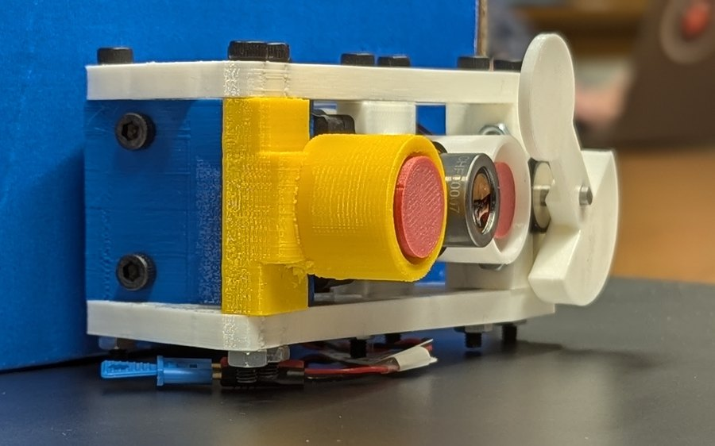
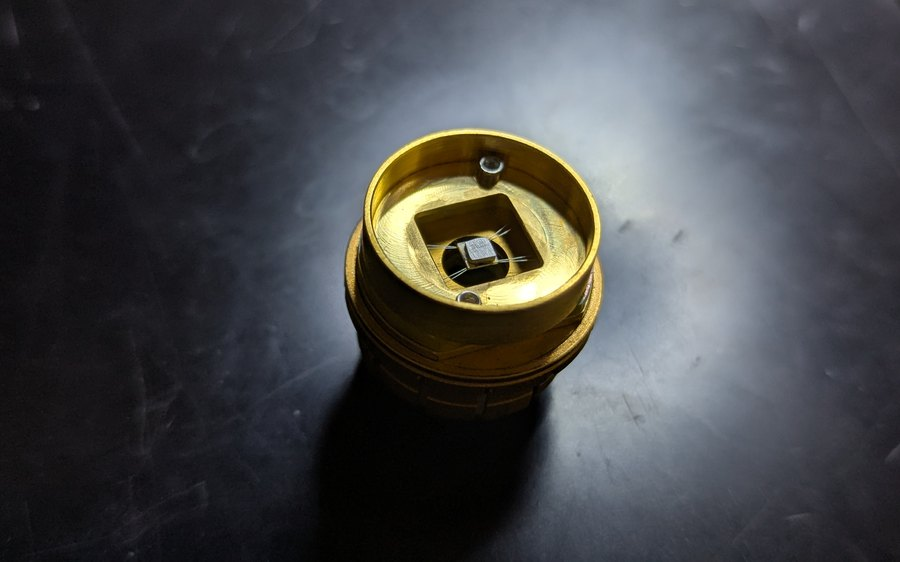
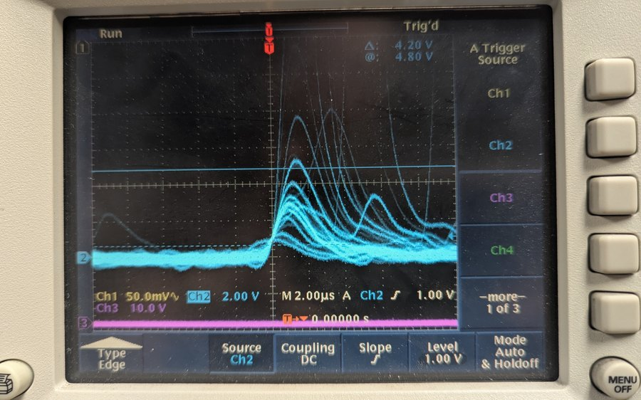
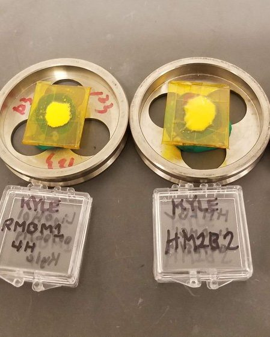
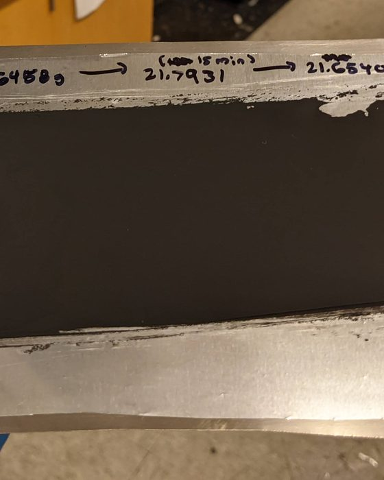
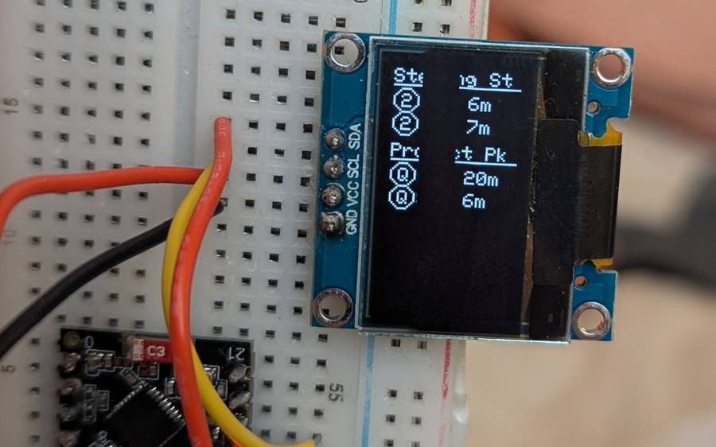
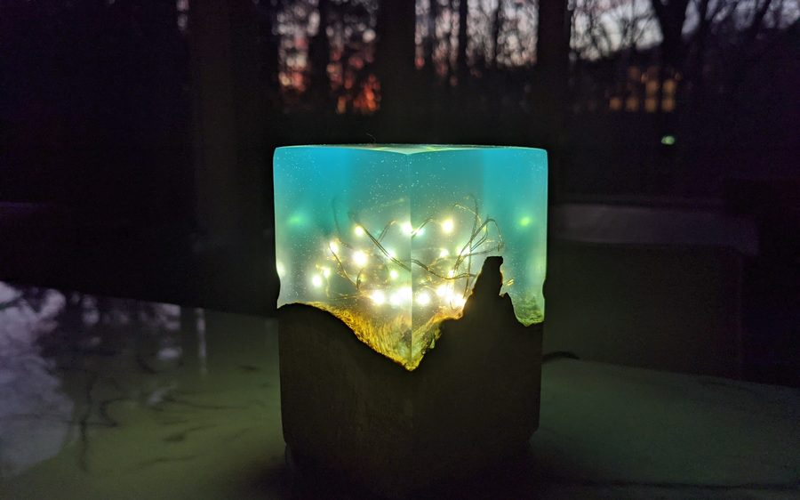
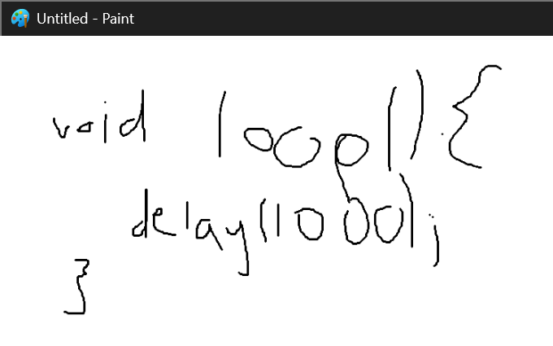

About
I like problems that mix physics, experiments, and building things. That can mean working out why an alloy behaves the way it does, debugging electronics, or simulating where a detector should go. I also like teaching people to use lab and makerspace tools.

Research

Miniaturized Mössbauer spectrometer
I work with JPL on a NASA PICASSO prototype that combines backscatter Mössbauer spectroscopy with X-ray fluorescence to identify iron-bearing minerals and a rock’s composition in place. My part is working out what limits the spectra: how wide the lines get and how long a measurement takes. I measured the piezo drive’s motion with a laser vibrometer, compared sensors for its feedback loop, debugged the counting electronics, and use a Monte Carlo model of photon paths to compare detector layouts.

The entropy of high-entropy alloys
High-entropy alloys are named for the entropy of mixing several elements, but atomic vibrations, electrons, and magnetism add entropy too. I measured the heat capacity of three alloy families from 2 to 400 K, with and without added aluminum, and used diffraction and microscopy to estimate the mixing part. At 385 K, those three measured contributions together were about three times the entropy of mixing. Adding aluminum lowered the total in all three families.
Published
The entropy of “high-entropy” alloys of transition metals with aluminum. K. Hunady, I. Elmasri, B. Fultz. Acta Materialia 321, 122808 (2026).
Compositional control of magnetocaloric performance and energy losses in LaFe11.5−(x+y)CoxNiySi1.5 alloys. E. Priesen Reis, S. Velling, Z. Feng, K. Hunady, L. Ye, B. Fultz. Journal of Applied Physics 140, 143901 (2026).
Enhancement of magnetic properties of single-grain flux-grown icosahedral AlCuFe quasicrystal by shock compression. P. Bardziński, D. Kulesza, P. Asimow, J. Hu, S. Armstrong, D. Silevitch, T. Rosenbaum, J. Goraus, K. Hunady, B. Fultz. Acta Materialia 311, 122177 (2026).
High-energy density Li-ion battery cathode using only industrial elements. E. Patheria, P. Guzman, L. Soldner, M. Qian, C. Morrell, S. Kim, K. Hunady, E. Priesen Reis, N. Dulock, J. Neilson, J. Nelson Weker, B. Fultz, K. See. Journal of the American Chemical Society 147, 9786 (2025).
In preparation
Feedback control and geometry optimization of a miniaturized Mössbauer spectrometer with piezoelectric drive. R. Toda, K. Hunady, E. Labelson, et al.
Nano-size pyrite-induced sulfate and iron oxide supports anaerobic oxidation of methane for anaerobic methanotrophic consortia. Y. Guo, K. Hunady, R. Deng, P. Guzman, G. Wegener, J. Kirschvink, B. Fultz, V. J. Orphan.
Talks and abstracts
Entropy in multi-principal-element alloys. K. Hunady, I. Elmasri, B. Fultz. TMS Annual Meeting, oral presentations, 2025 and 2026.
Scalable aqueous battery electrode processing strategy to improve high C-rate capability of Li-ion battery electrodes. D. Kim, A. Magasinski, K. Hunady, et al. ECS Meeting Abstracts MA2023-01, 603 (2023).
Projects

Getting up to speed on a question with Claude Code
I built tools around Claude Code that find papers through open-access and library APIs, pull the text, tables and plotted data out of them, and write a short report on what is known. The same tools serve every project and use as little of my Claude usage as they can.
See the workflow →
Simulating photon paths in a Mössbauer spectrometer
My Monte Carlo model follows photons from the source to the sample and on to the detector. Photons that travel at an angle to the drive’s motion pick up a smaller Doppler shift, which broadens the spectral lines. The layout sets both the count rate and that broadening, so I compare designs in the model before we change the hardware. It predicts that moving the source back in the next design doubles the count rate at the same line sharpness.
How it works →
Faster entropy estimates with a downloaded force field
Fitting a machine-learned potential for each material takes weeks of quantum-mechanical calculations. Pretrained models built from existing databases skip that step and get most of the way there. I test how far one, MACE-OMAT-0, goes on the entropy of melting by repeating a study from our group that used custom-fitted models.
Project page →
Setting energy windows for gas-filled detectors
Setting an energy window means knowing what the detector’s pulses look like. This Python script reads pulses from an oscilloscope and plots their heights, so you can see where to set the window on a single-channel analyzer.
pulse-height-distribution →

Solid electrolytes and Li-ion cathodes
In Gleb Yushin’s lab, I changed how we milled a lithium-rich anti-perovskite electrolyte and raised its ionic conductivity roughly tenfold. In a second project, I used a common shampoo ingredient to make pores in nickel-manganese-cobalt oxide (NMC) cathodes. At 3C, a 20-minute discharge rate, the porous coating delivered about 17% more capacity.
Project page →
Subway arrival display
I built a small OLED display that shows when the next New York City subway trains are coming. An ESP32 reads the MTA’s live GTFS Realtime feed and updates the screen, so you can tell whether to walk or run for your train.
walk-or-run-mta →
I love lamps
And vector graphics. And modular origami. And plants, cyanotypes, electroplating and other stuff.
See the gallery →
B.C. (before Claude)
I wrote two Inkscape extensions and a Minecraft server plugin, and built an ESP32 camera that uploads photos to Google Drive.
Browse the projects →Leadership and service

I chair a 10-member board that brings graduate student concerns to the leadership of Caltech’s Engineering and Applied Science division. Each of our programs now has a lead and a small team.
I keep graduate students and the rest of campus up to date on the council’s work. I review submissions to the graduate mailing lists, redesigned the council website, and wrote tools with Claude that draft the weekly newsletter from the announcements sheet.
I set meeting agendas, manage the club’s Slack and mailing lists, and lead group hikes. I also rebuilt the website so the event listing updates from the club’s Google Calendar.
Teaching in the makerspaces was one of my favorite parts of undergrad. I taught Arduino, soldering, 3D printing, laser cutting, scanning electron microscopy, and profilometry, and I helped train new instructors.
Contact
Email is the best way to reach me.